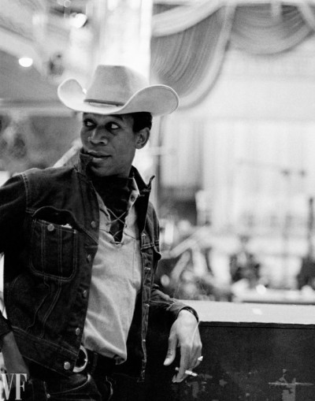

Morgan Freeman commence sa carrière de comédien à 30 ans, à l'affiche de Hello Dolly ! à broadway et se fait remarquer sur scène pour l'interprétation dans la pièce The nigger loves avec Stacy Keach ainsi que Viveca Lindfors. Grâce à la série télévisée The electric company, il se fait connaître par le public américain ; il incarne le personnage d'Easy reader pendant six ans.
Morgan commence le cinéma bien plus tard. En 1987, il est récompensé pour le rôle de Fast Black dans La rue. En 1990, le film Miss Daisy et son chauffeur lui offre un Golden Globe, un Ours d'argent ainsi qu' une nomination aux Oscars. Freeman joue ensuite dans des films de grands réalisateurs, comme dans Robin des bois, prince des voleurs de Kevin Reynolds, mais aussi dans les films de son ami Clint Eastwood : Impitoyable par exemple.
Morgan Freeman incarne souvent des personnages sages, déterminés, calmes, réfléchis. Il joue le juge en 1991 dans Le bûcher des vanités, un prisonnier exemplaire dans Les évadés, un détective hors pair dans Seven, Dieu dans Bruce tout puissant, l' animateur de télévision qui démonte les tours de magie, Thaddeus Bradley dans Insaisissables.
Les rôles qu'incarne Morgan Freeman sont liés avec son engagement politique. Il soutient la cause noire américaine et la justice. Il joue en 1997 le rôle d'un abolitionniste dirigeant une mutinerie dans Amistad de Spielberg. Il réalise un film prenant fait et cause contre l'appartheid en 1993 : Bopha.En 2009, il incarne Nelson Mandela pour le film de Clint Eastwood dans Invictus.
Toutefois, Morgan Freeman s'essaye aussi dans d'autres genres de films. Il joue dans les comédies Evan tout puissant en 2003, il incarne un retraité qui prépare un casse dans Braquage à l'ancienne, dans la comédie d'action RED en 2010. On voit aussi jouer Freeman dans des blockbusters : il joue le rôle de Lucius Fox dans Batman : origins en 2003, puis en 2010 dans The dark knight et en 2012 dans The Dark Knight Rises. On le trouve aussi dans Wanted : choisis ton destin. Freeman incarne le Docteur Mc Carthy, spécialiste des animaux marins dans le film pour enfants Winter le dauphin.